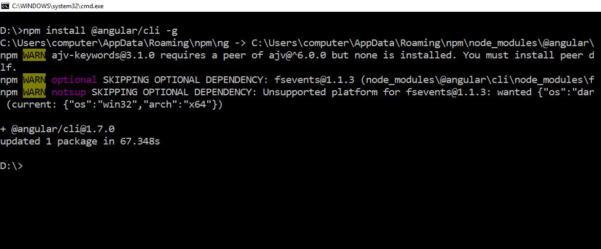
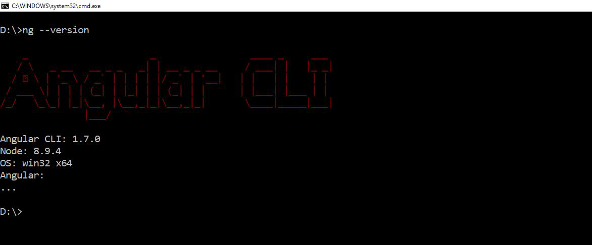

Angular CLI is a command Line Interface for developing, maintaining and testing your angular applications.
ng new It is used to create a new angular application with standard structure for application.
ng generate It is used to generate building blocks of angular application like components, routes, services and pipes.
ng server It is used to test your application on system.
Before you install, Angular CLI require Node 6.9.0 or higher, together with NPM 3 or higher.
Open Command prompt and type "npm install -g @angular/cli" to install it on system.

Open Command prompt and type "ng --version" to get information on version.
For More information on Angular CLI you can visit here, Angular CLI
